<head><style> .column5{ width: 50%; float:left;} </style> <style> .column3{ width: 30%; float:left;} </style> <style> .column7{ width: 70%; float:left;} </style> <style> .table { border-collapse: collapse; } </style> <style> .td, .th { border: 1px solid white; } </style> </head> ## Résolution de problèmes ### Recherches à l'aide d'heuristique #### M1 Info [D. Olivier](http://litis.univ-lehavre.fr/~olivier/PagePerso) ## Plan du cours * [Introduction](#/2) * [Saisir l'énoncé](#/3) * [Mécanisme de résolution de problème](#/4) * [Heuristique](#/5) * [Espace des états d'un problème](#/6) * [Définition de l'espace des états](#/7) * [Méthodes de recherche aveugle](#/8) * [Méthodes de recherche heuristique](#/8) # Introduction ## Démarche 1. Saisir l'énoncé (capacités auditives, visuelles, mémorisation) -formalisation-; 2. Inférences immédiates (complétion des informations manquantes) ; 3. Utiliser la situation (Quelles sont les difficultés, vérification de 1 et 2) ; 4. Ne pas se précipiter, maturation, incubation ; 5. ***Choix d'une représentation*** ; 6. Résolution totale ou partielle (retourner en 2) ; 7. Vérifier ; 8. Généralisation possible ? # Saisir l'énoncé ## formalisation 1. Le jour du 14 juillet existe-t-il en Angleterre ? 2. Combien d'anniversaires a eu une personne qui a vécu 50 ans ? 3. Certains mois ont 31 jours, combien ont un 28ème jour ? 4. Combien de 9 y a-t’il entre 0 et 100 ? 5. Est-il correct qu'un homme se marie avec la sœur de sa veuve ? 6. Divisez 30 par 1/2 et ajoutez 10. Quel est le résultat ? 7. S'il a 3 pommes et que vous en prenez 2, combien en avez-vous ?! 8. Un médecin vous donne trois comprimés et vous dit d'en prendre un chaque demi-heure. Combien de minutes vous durent les comprimés ? 9. Un fermier a 17 moutons. Tous meurent, sauf 9. Combien lui en reste-t-il ? 11. Combien de timbres de 2 centimes y a-t-il dans une douzaine ? Note: 1. Oui juste après le 13 2. 50 3. 12 tous ont 28 jours 4. 20 -> 9 19 29 39 .....90 91 92 ... 99 5. Non car il est mort 6. 70 7. 2 8. 60 X--30--X--30--X 9. 9 of course 10. 12 ## Capacités cognitives ### Crétin de cerveau ! <div class="column5"> Combien de S dans ce texte ? <blockquote> Non la science n'est pas une illusion. mais ce serait une illusion de croire que nous puissions trouver ailleurs ce qu'elle ne peut pas nous donner. </blockquote> Sigmund Freud <p>15</p><!-- .element: class="fragment" --> </div> <div class="column5"> Combien de F dans ce texte ? <blockquote> Finished files are the result of years of scientific study combined with the experience of many years </blockquote </div> <p>6</p> <!-- .element: class="fragment" --> ## Capacités cognitives ### Crétin de cerveau <) * La typoglycémie > Aoccdrnig to a rscheearch at Cmabrigde Uinervtisy, it deosn't mttaer in! waht oredr the ltteers in a wrod are, the olny iprmoetnt tihng is taht! the frist and lsat ltteer be at the rghit pclae. The rset can be a total! mses and you can sitll raed it wouthit porbelm. Tihs is bcuseae the! huamn mnid deos not raed ervey lteter by istlef, but the wrod as a! wlohe. > ZREO HIUT METINUS ## Capacités visuelles ### Cube de Necker et cube impossible 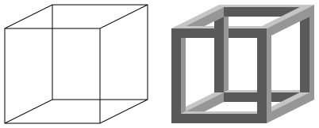 ## Capacités visuelles ### Illusion d'Adelson Que pensez vous des cases `A` et `B` ? 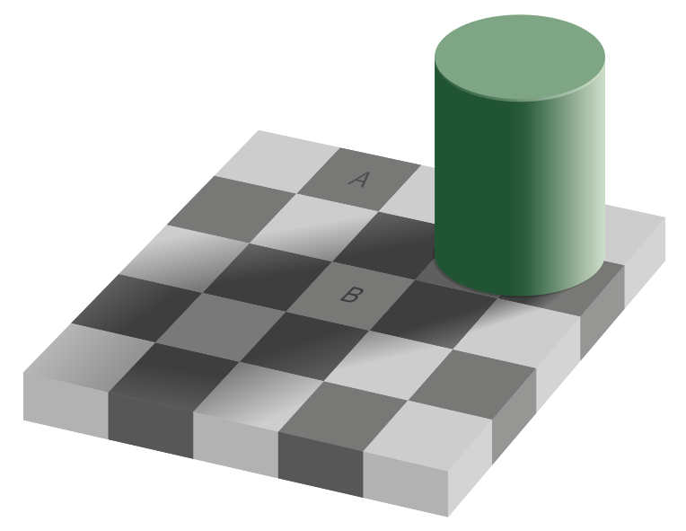 ## Capacités visuelles ### Vous êtes sur ? Que pensez vous des cases `A` et `B` ? ## Inférences Passer par chacun des 9 points en traçant au plus quatre segments de droite sans lever le crayon.  ## Inférences Passer par chacun des 9 points en traçant au plus quatre segments de droite sans lever le crayon.  ## Représentation * Les N-reines (cf. TD). * Grille de 8x8 dont 2 coins opposés sont enlevés. Est-il possible de la recouvrir totalement avec des éléments de deux cases contiguës verticalement ou horizontalement ?  ## Représentation Supposons que notre grille soit une alternance de case blanche et noire. Lorsqu’on retire deux cases en coin diamétralement opposées, on retire deux cases de la même couleur. Il reste alors 32 cases d’une couleur contre seulement 30 de l’autre. Or, un domino recouvre nécessairement une case blanche et une case noire. Il est donc impossible de recouvrir le reste de l’échiquier ! ## Inférence et représentation du problème Former quatre triangles équilatéraux avec 6 allumettes. <!-- .element: class="fragment" --> # Mécanisme de résolution de problèmes ## États, espace des états * **État** - Un état est une représentation qui permet de connaître la situation actuelle dans le cadre de la résolution sans ambiguïté et ne tient compte que des informations pertinentes pour résoudre le problème. - Il est décrit par une structure de données et ses valeurs. * **État initial** - C'est celui à partir duquel la recherche débute. * **Opérateur** - Transforme un état donné en un autre état suivant des règles. * **Espace des états** - Il est décrit par un état initial et par un ensemble dʼopérateurs ayant un coût donné. ## Algorithmes de recherche * Ils se déroulent dans un espace appelé espace dʼétats. * Ils recherchent une séquence dʼopérateurs (appelée **chemin**) menant à une solution : **état final**. * Dans un état donné, ils explorent toutes ou partie des opérateurs respectant les règles. ## Algorithmes de recherche * On peut chercher tous les chemins conduisant à un ou des états finaux ; * La **stratégie de recherche** décrit comment on utilise les états connus (faits) et les états finaux (buts) pour trouver un chemin. ## Algorithmes de recherche Il existe deux grandes familles de recherche classique : * L'approche dirigée par les données / les faits - Chaînage avant dans le cadre des systèmes-experts. * L'approche dirigée par les buts - Chaînage arrière dans le cadre des systèmes-experts. * Quel type de recherche a été utilisé dans le problème des N-reines ? # Heuristique - heuriskein : trouver # Heuristiques * Pour les problèmes de grandes tailles : - pas de temps de calculs "raisonnables" avec les méthodes exactes on recherche de "bonnes" solutions approchées. * **Heuristiques** : règles empiriques simples basées sur l’expérience (résultats déjà obtenus) et sur l’analogie. Généralement, on n’obtient pas la solution optimale mais une solution approchée. * Choix du melon. * Algorithme glouton ("greedy") : construction d’une solution réalisable en se ramenant à une suite de décisions qu’on prend à chaque fois au mieux en fonction d’un critère d’optimisation local sans remettre en question les décisions déjà prises. Généralement, la solution obtenue est approchée. * Intérêt : algorithmes simples à implémenter. * Défauts : solutions approchées obtenues plus ou moins bonnes, critère local ("myopie") ## Métaheuristique * Une métaheuristique est une heuristique générique qu’il faut adapter à chaque problème. Une des difficultés de la recherche heuristique est de trouver une heuristique appropriée * L’heuristique dépend beaucoup du domaine d’application et son développement demande souvent des compétences avancées * On peut donc s’intéresser à des méthodes heuristiques globales proposant une méthode de recherche générique dépendant aussi peu que possible du domaine d’application * => méta-heuristique ## Métaheuristiques * Souvent : - fondées sur un échantillonnage probabiliste, - inspirées par des systèmes naturels. ## Les grandes familles * Méthodes par construction * Méthodes par décomposition * Méthodes de voisinage (une solution courante) : - heuristiques classiques - métaheuristiques de voisinage : recuit simulé, recherche tabou. * Méthodes à base de population : * algorithmes évolutionnaires, * estimations de distributions, * colonies de fourmis, * essaims particulaires. ## Exemple de recherche avec heuristique ### Méthode du gradient * A partir d'un $état_i$ on peut atteindre un ensemble d'$états_j$ ; * Une **fonction heuristique** doit permettre de choisir l'$état_{i+1}$ parmi ces $états_j$ ; * La méthode du gradient est une méthode heuristique basée sur une notion d'optimisation locale ; * C'est une **stratégie irrévocale**; un retour en arrière ne permet pas d'essayer d'autres solutions. ## Méthode du gradient ### Principe $$ f \left\\{ \begin{array}{lll} R & \rightarrow & R \\\\ x & \mapsto & f(x) \end{array} \right. $$ * On fixe un pas $\Delta x$ et on considère que le maximum n'est pas atteint tant que `$f( x_i ) \leq f(x_{i+1})$` avec `$i \in N$ et $x_{i+1}= x_i + \Delta x$`. * Quand `$f(x_i) > f(x_{i+1})$`, `$x_i$` est le maximum. ## Méthode du gradient ### Application au 8-puzzle 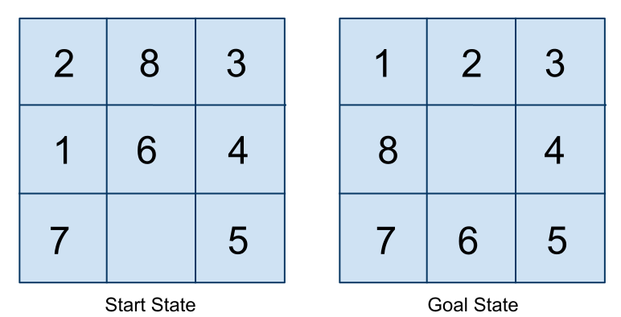 * Déterminer une fonction heuristique qui permette de construire un chemin de l'état initial vers l'état final. * Donner le chemin. # Espace des états d'un problème ## Définition d'un problème Un problème peut être vu comme un triplet $(I, O, B)$ dans lequel : * $I$ ensemble des états initiaux ; * $O$ ensemble des opérateurs connus du système. Un opérateur transforme un état en un autre. * $B$ ensemble des états finaux ou test de but. * Fonction de coût simple ou heuristique. ## Question * Quelle est la taille de l'espace des états pour le 8-puzzle : - 9! = 362 880 <!-- .element: class="fragment" --> - En fait 9!/2 car la moitié des positions de départ sont impossibles à résoudre <!-- .element: class="fragment" --> * Pour le problème des 8 reines - 64⁸ <!-- .element: class="fragment" --> * Cela démontre qu'il est important d'essayer de réduire cet espace comme par exemple poser une reine par ligne - 8⁸ <!-- .element: class="fragment" --> ## Solution * Séquence finie d'opérateurs `$o_k \in O$` permettant d'aller de `$i \in I$` vers `$b \in B$`. * L'espace de résolution est alors représenté par un graphe des états. * Une solution est donc un chemin entre `$i \in I$` vers `$b \in B$`. ## Système de résolution * Comporte : - Un ensemble des structures de données organisées en un graphe ; - Un ensemble d'opérateurs caractérisés par leurs conditions d'application et leurs actions ; - Une structure de contrôle mettant en oeuvre la stratégie de résolution. ## Exemple ### Le loup, la chèvre et le choux * Un loup, une chèvre et un chou se trouvent sur la rive gauche d'une rivière. Comment les faire traverser de l'autre coté à l'aide d'une barque ne contenant que deux places (dont une pour le fermier) sachant que si le loup et la chèvre restent sur la même rive la chèvre sera mangée et que si la chèvre et le chou restent ensemble c'est le choux qui sera mangé. ## Exemples ### Le loup, la chèvre et le chou * Travail à réaliser : 1. Choisir un formalisme permettant de représenter les états possibles ; 1. Identifier, dans ce formalisme, l'état initial et le(s) état(s) final(ux) ; 1. Définir l'ensemble des opérateurs en précisant les prémisses, les contraintes et les conséquences ; 1. Établir la liste des actions permettant d'atteindre une solution. ## Exemples ### Le singe et la banane * Un singe est dans une pièce avec des bananes. Un singe mesurant 1,5 mètre se trouve dans une pièce de 3 mètres de hauteur. Une banane est suspendue au plafond de cette pièce, et le singe aimerait bien avoir cette banane. La pièce contient également 1 caisse de 1,5 mètre qu’il peut déplacer et sur laquelle il peut monter. * [Vous ne verrez plus les pigeons de la même façon !](https://www.youtube.com/watch?v=mDntbGRPeEU) ## Exercices ## Les missionnaires et les cannibales * Trois missionnaires et trois cannibales sont sur un même coté d'une rivière qu'ils doivent traverser à l'aide d'une barque à deux places nécessitant au moins une personne pour la manipuler. Si sur un coté (et la barque est toujours considérée comme étant sur un des cotés) il y a strictement plus de cannibales que de missionnaires, ces derniers sont mangés. Comment faire traverser tout le monde sans que les missionnaires ne soient mangés ? ## Exercices ## La traversée du pont * Quatre personnes doivent traverser un pont en 17 minutes. Chacune d'entre elles marche à une vitesse maximale donnée. Une personne peut traverser le pont en 1 minute, une autre en 2 minutes, une autre en 5 minutes et la dernière en 10 minutes. Il est impossible de traverser le pont sans torche, et ces quatre personnes n'ont en tout qu'une torche. Le pont ne peut supporter que le poids de 2 personnes. On cherche à déterminer l'ordre dans lequel ces quatre personnes doivent traverser. ## Exercices ## Tours de Hanoï Dans ce solitaire, on dispose d'anneaux de tailles toutes différentes et à tout moment, au dessus de tout anneau, il n'y a que des anneaux plus petits. Comment amener tous les disques à l'unique position légale où tous les disques se trouvent sur l'axe de gauche à celle où tous se trouvent sur l'axe de droite ? # Définition de l'espace des états ## Notions * Un état = un nœud dans un graphe ou plus généralement un graphe orienté ; * Pour un nœud donné, on peut déterminer un ensemble de successeurs ; * Le nombre de successeurs correspond au 1/2 degré extérieur - degré de ramification en IA ; * Un graphe peut-être spécifié explicitement - Les nœuds et les arcs sont présents "dans" la structure de données ; * Un graphe peut-être spécifié implicitement - La structure de données permet de connaître tous les nœuds et les arcs ; ## Notions ### Remarques * Une spécification explicite n'est pas possible pour les graphes importants ; * Une spécification explicite est impossible pour les graphes infinis ; * Analogie avec les ensemble en extension ou en compréhension. - Arithmétique de Péano 1. L'ensemble contient un élément particulier noté 0. 0 est donc un entier naturel. 2. À chaque élément n de l'ensemble correspond un successeur noté: S(n). Tout entier naturel a possède un successeur. 1. L'élément particulier noté 0 n'a pas de successeur. Seul 0 n'est le successeur d'aucun élément. ## Représentations <div class="column5"> 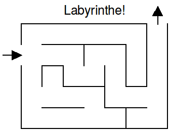 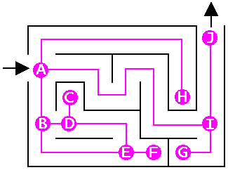 </div> <div class="column5"> Espace des états 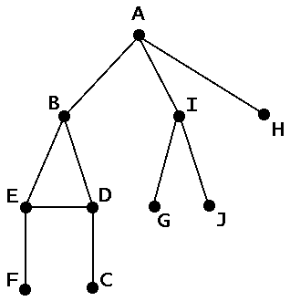 </div> ## Représentations <div class="column5"> 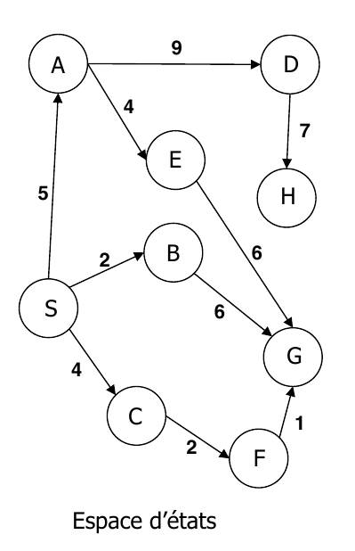 </div> <div class="column5"> 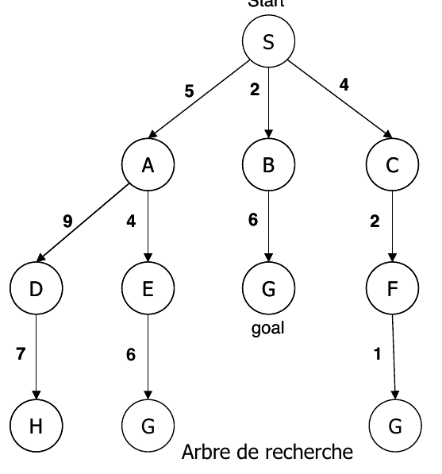 </div> # Méthodes de recherche aveugle ## Recherches aveugles * Non informées * en largeur ; * en coût uniforme ; * en profondeur ; * en profondeur limitée ; ## Recherches avec heuristiques * Glouton ; * Algorithmes A, A`*`, IDA`*`, SMA`*`. ## Critères d'évaluation * Les différentes méthodes de recherche sont évaluées selon les critères suivants : * Complétude * trouve une solution si elle existe ;<!-- .element: class="fragment" --> * Optimalité * trouve la meilleure solution ;<!-- .element: class="fragment" --> * Complexité en temps ; * Complexité en espace mémoire ; * Ces critères vont dépendre de : * `b =` facteur de branchement maximum de lʼarbre de recherche ; * `d =` profondeur à laquelle se trouve le meilleur nœud-solution ; * `m =` profondeur maximum de lʼespace de recherche (parfois ∞). ## Exploration de l'espace ### Première version ``` fonction recherche-generale (problème, stratégie) retourne la solution ou échec initialiser le graphe de recherche par lʼétat initial du problème boucle si il nʼy a pas de candidats pour le développement alors retourner échec! sinon choisir un nœud pour le développer suivant la stratégie si le nœud est un état final alors retourner la solution sinon développer le nœud et ajouter les nœuds fils dans lʼarbre finboucle fin ``` * Les méthodes de recherche diffèrent les unes des autres selon lʼordre dans lequel les nœuds sont explorés. ## Exploration de l'espace ### Développement du graphe * On développe une partie du graphe défini implicitement ; * _Entrée_: `$etat_{initial}$`, `$etat_{final}$` ; * _Sortie_ : graphe de recherche $G$ contenant le chemin s'il existe ; * _Valeur renvoyée_ : `VRAI` l'`$etat_{final}$` a été atteint, `FAUX` sinon. * On utilise deux listes : - `OUVERT` liste des nœuds à développer ; - `FERME` liste des nœuds déjà développés ; ## Exploration de l'espace ### Développement du graphe ``` fonction explorer(etat_initial, etat_final, G) G <- etat_initial /* Création du graphe */ OUVERT <- etat_initial FERME <- vide TANTQUE OUVERT <> vide FAIRE n <- Premiernœud(OUVERT) OUVERT <- OUVERT - n FERME <- FERME + n SI n = etat_final ALORS RETOURNER VRAI FSI M <- Developper(n) G <- G + M Mémoriser un pointeur vers n pour les éléments de M qui n'étaient pas dans G OUVERT <- OUVERT + M Pour chaque élément de M qui étaient dans OUVERT ou FERME décider si on redirige ou non le pointeur vers n Pour chaque élément de M qui est déjà dans FERME décider pour chacun de ses descendants dans G si on redirige ou non le pointeur Réordonner OUVERT selon une méthode (heuristique ou non) FTQ retourner FAUX ``` ## Recherche en largeur d'abord * Stratégie : étendre le nœud le moins profond ; * Gestion de OUVERT : file d'attente ; <!-- .element: class="fragment" --> --- <div class=column5 style="font-size:70%"> <table> <tr> <th>FERME</th> <th>OUVERT</th> </tr> <tr> <td></td> <td>{S}</td> </tr> <tr> <td>{S}</td> <td>{A,B,C}</td> </tr> <tr> <td>{S,A}</td> <td>{B,C,D,E}</td> </tr> <tr> <td>{S,A,B}</td> <td>{C,D,E,G}</td> </tr> <tr> <td>{S,A,B,C}</td> <td>{D,E,G,F}</td> </tr> <tr> <td>{S,A,B,C,D}</td> <td>{E,G,F,H}</td> </tr> <tr> <td>{S,A,B,C,D,E}</td> <td>{G,F,H,G}</td> </tr> </table> <ul><li>Chemin : S, B, G. Coût : 8. nœuds testés 7. nœuds étendus : 6.</li></ul> </div> <div class=column5> 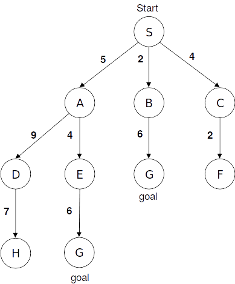 </div> ## Recherche en largeur d'abord * Les nœuds dans OUVERT sont ordonnés par ordre croissant en fonction de leur profondeur ; * La recherche en largeur d'abord garantit la découverte du chemin le plus court vers l'état final : - S'il existe .... - S'il n'existe pas, l'exploration échoue dans le cas des graphes finis ou ne se termine jamais dans le cas des graphes infinis. ## Recherche en largeur d'abord  ## Recherche en profondeur d'abord * Stratégie : étendre le nœud le plus profond ; * Gestion de OUVERT : pile ; <!-- .element: class="fragment" --> --- <div class=column5 style="font-size:70%"> <table> <tr> <th>FERME</th> <th>OUVERT</th> </tr> <tr> <td></td> <td>{S}</td> </tr> <tr> <td>{S}</td> <td>{A,B,C}</td> </tr> <tr> <td>{S,A}</td> <td>{D,E,B,C}</td> </tr> <tr> <td>{S,A,D}</td> <td>{H,E,B,C}</td> </tr> <tr> <td>{S,A,D,H}</td> <td>{E,B,C}</td> </tr> <tr> <td>{S,A,D,H,E}</td> <td>{G,B,C}</td> </tr> </table> <ul><li>Chemin : S, A, E, G. Coût : 15. nœuds testés 6. nœuds étendus : 5.</li></ul> </div> <div class=column5> 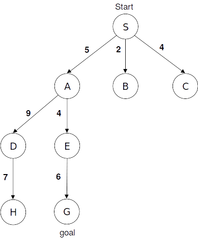 </div> ## Recherche en profondeur d'abord * Les nœuds dans OUVERT sont ordonnés par ordre décroissant en fonction de leur profondeur ; * La recherche en profondeur ne garantit pas la découverte du chemin le plus court vers l'état final : - Dans le cas des graphes infinis on peut partir dans une recherche infinie ; - En génèral on impose une limite de profondeur. ## Recherche en profondeur d'abord 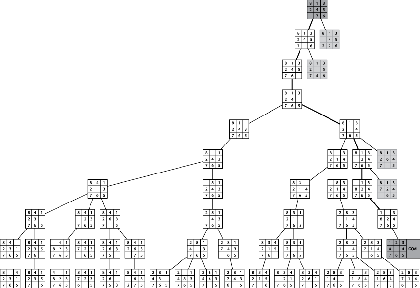 ## Recherche par approfondissement itératif * Stratégie : profondeur limitée avec L allant de 1 à +∞ ; * Gestion de OUVERT : pile ; --- * Le probleme de la recherche en profondeur limitée est de fixer la bonne valeur de limite (L) ; * L’approfondissement iteratif combine les avantages de la recherche en largeur et en profondeur : * Optimal et complet comme la recherche en largeur ; * Econome en espace comme la recherche en profondeur. * C’est l’algorithme de choix si l’espace de recherche est grand et si la profondeur est inconnue ## Recherche simple ”bi-directionnelle” * Idée * Effectuer une recherche par chaînage avant à partir de l’état initial et effectuer une recherche par chaînage arriere à partir de l’état final ; * Stratégie * Effectuer les deux recherches et stopper lorsqu’elles se rencontrent. * Conditions * Il faut disposer de l’ensemble des actions inverses ; * L'état final ne doit pas être exprimé sous la forme d'une condition. ## Recherche en coût uniforme * Stratégie : étendre le nœud de coût le plus faible ; * Gestion de OUVERT : insertion des successeurs dans lʼordre croissant des coûts de chemin ; --- <div class=column5 style="font-size:70%"> <table> <tr> <th>FERME</th> <th>OUVERT</th> </tr> <tr> <td></td> <td>{S:0}</td> </tr> <tr> <td>{S:0}</td> <td>{B:2,C:4;A:5}</td> </tr> <tr> <td>{S:0,B:2}</td> <td>{C:4,A:5,G:8}</td> </tr> <tr> <td>{S:0,B:2,C:4}</td> <td>{A:5,F:6,G:8}</td> </tr> <tr> <td>{S:0,B:2,C:4,A:5}</td> <td>{F:6,G:8;E:9,D:14}</td> </tr> <tr> <td>{S:0,B:2,C:4,A:5,F:6}</td> <td>{G:7,G:8,E:9,D:14}</td> </tr> </table> <ul> <li>Chemin : S, C, F, G. Coût : 7. nœuds testés 6. nœuds étendus : 5.</li> <li>Le coût d'un chemin doit jamais décroître. </ul> </div> <div class=column5> 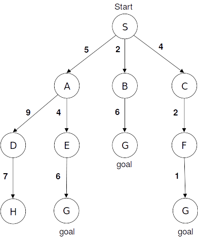 </div> ## Comparaison de la recherche simple Critères |Largeur |Coût uniforme |Profondeur |Profondeur limitée |Profondeur itérative |Bi-directions --|---|---|---|---|---|-- Complétude |Oui(1) |Oui(1) |Non |Oui |Oui(1) |Oui(3) Optimalité |Oui(2) |Oui |Non |Non |Oui(2) |Oui(2-3) Temps |`$b^d$` |`$b^d$` |`$b^m$` |`$b^L$` |`$b^d$` |`$b^{d/2}$` Mémoire |`$b^d$` |`$b^d$` |`$bm$` |`$bL$` |`$bd$` |`$b^{d/2}$` <!-- .element style="font-size:70%" --> * $b$ = facteur de branchement maximum dans l'arbre de recherche ;<!-- .element style="font-size:40%" --> * $d$ = profondeur à laquelle se trouve la meilleure solution ;<!-- .element style="font-size:40%" --> * $m$ = profondeur maximale de l'espace de recherche ;<!-- .element style="font-size:40%" --> * $L$ = limite de profondeur de recherche.<!-- .element style="font-size:40%" --> 1. (1) Si $b$ est fini <!-- .element style="font-size:40%" --> 1. (2) Si les coûts sont identiques <!-- .element style="font-size:40%" --> 1. (3) Si les deux directions sont des largeurs d’abord <!-- .element style="font-size:40%" --> # Méthodes de recherche avec heuristique ## Recherche avec une heuristique * Les algorithmes de recherche simple nʼexploitent aucune information concernant la structure de lʼarbre de recherche ou la présence potentielle de nœuds-solution pour optimiser la recherche. * La plupart des problèmes réels sont susceptibles de provoquer une explosion combinatoire du nombre dʼétats possibles. * Un algorithme de recherche heuristique utilise lʼinformation disponible pour rendre le processus de recherche plus efficace. * Une information heuristique est une règle ou une méthode qui presque toujours améliore un processus de décision. * Une heuristique est spécifique à un problème. ## Recherche avec une heuristique * Fonction de coût ou fonction d'évaluation * Pour chaque noued $n$ $f(n)$ est le coût du nœud ; * On utilise souvent une approximation. * Fonction heuristique - `$h : E \rightarrow \cal{R}$`, $E$ correspond à l'espace des états. - Pour un état $e$ donné, $h(e)$ est une estimation du coût du chemin de $e$ à un état final. * Propriétés - $h$ doit posséder les propriétés suivantes, soit $b$ un état final $b$ ; - `$h(e) \ge 0$`, si `$e \neq b$` ; - `$h(e) = 0$`, si `$e = b$` ; - `$h(e) = \infty $`, si $b$ n'est pas atteignable à partir de $s$. ## Qualité d'une heuristique * On utilise le facteur de branchement effectif - Soit $N$ le nombre total d'états produit pour obtenir la solution ; - Soit $d$ la profondeur à laquelle la solution a été trouvée ; - On calcule alors `$b_*$`, facteur de branchement d'un arbre fictif parfaitement équilibré tel que : $$ N = 1 + b\_\* + \{b\_\*\}^2 + ... + \{b_\*\}^d $$ - ex : $d=5$, $N=52$ `$b \approx 1,91$` * Une bonne fonction heuristique aura une valeur `$b_*$` proche de 1. ## Dominance * Soient deux fonctions heuristiques `h1(n)` et `h2(n)` ; * Si `h2(n) ≥ h1(n)`, `∀n` alors on dit que `h2` domine `h1` et produira une recherche plus efficace. ## Recherche du meilleur d'abord * Stratégie : - Développer à chaque étape le nœud le plus prometteur au regard dʼune fonction `f(n)` dʼévaluation du coût total qui tient compte de lʼheuristique. - On dispose pour le problème d’une fonction heuristique `h(n)`. * Gestion de OUVERT : insérer les successeurs en ordre croissant de leur valeur `f(n)`. * Algorithmes : - Algorithme glouton - On minimise le coût du chemin vers le but à chaque étape `f(n)=h(n)`. - Algorithme A∗ - Intégration du coût du chemin déjà trouvé dans l’estimation `f(n) = g(n) + h(n)`avec `g(n)` le coût entre le nœud de départ et `n`. ## Algorithme glouton * Stratégie : minimiser le coût estimé pour atteindre le but `f(n)=h(n)`. * Gestion de OUVERT : insérer les successeurs en ordre croissant de leur valeur `f(n)`. --- <div class=column5 style="font-size:70%"> <table> <tr> <th>FERME</th> <th>OUVERT</th> </tr> <tr> <td></td> <td>{S:8}</td> </tr> <tr> <td>{S:8}</td> <td>{C:3,B:4,A:8}</td> </tr> <tr> <td>{S:8,C:3}</td> <td>{G:0,B:4,A:8}</td> </tr> <tr> <td>{S:8,C:3,G:0}</td> <td>{B:4,A:8}</td> </tr> </table> <ul> <li>Chemin : S, C, G. Coût : 13. nœuds testés 3. nœuds étendus : 2.</li> <li>Fonctions heuristiques classiques : vol d'oiseau, distance de Manhattan</li> <li>Souvent efficace mais non optimale. </ul> </div> <div class=column5> 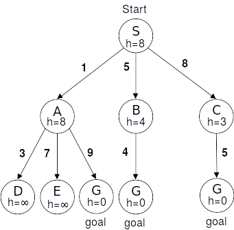 </div> ## Algorithme A * Un algorithme glouton minimise le coût estimé `h(n)` du nœud `n` au but réduisant ainsi considérablement le coût de la recherche, mais il nʼest ni optimal ni complet ; * Une recherche en coût uniforme minimise le coût `g(n)` depuis lʼétat initial au nœud `n`, il est optimal et complet, mais pas très efficace ; * Stratégie : Combiner la recherche gourmande et la recherche en coût uniforme, et rechercher le coût total `f(n)=g(n)+h(n)` du chemin passant par le nœud `n`. <!-- .element: class="fragment highlight-blue" --> ## Algorithme A* * Définition - Une fonction heuristique est admissible si elle ne surestime jamais le coût réel i.e. si `∀n, h(n) ≤ h*(n)` avec `h*(n)` = coût réel depuis `n` au but. * Théorème : - Si A utilise une fonction heuristique admissible alors A est optimal. Dans ce cas, l'algorithme est nommé A*. ## Algorithme A* * On repart de l'algorithme défini au niveau de l'exploration * On développe une partie du graphe défini implicitement ; * _Entrée_: `$etat_{initial}$`, `$etat_{final}$` ; * _Sortie_ : graphe de recherche $G$ contenant le chemin s'il existe ; * _Valeur renvoyée_ : `VRAI` l'`$etat_{final}$` a été atteint, `FAUX` sinon. * On utilise deux listes : - `OUVERT` liste des nœuds à développer ; - `FERME` liste des nœuds déja développés ; ## ALgorithme A* ``` fonction explorer(etat_initial, etat_final, G) FERME <- vide OUVERT <- etat_initial TANTQUE OUVERT <> vide FAIRE n <- PlusPetitnœud(OUVERT) OUVERT <- OUVERT - n FERME <- FERME + n M <- Developper(n) SI il existe n' dans M, tq n' = etat_final ALORS RETOURNER VRAI SINON POUR n' dans M FAIRE Lier n' à n (construction de G) Calculer f(n') SI n' n'appartient pas ni à OUVERT et FERME ALORS OUVERT <- OUVERT + n' Associer f(n') au nœud n' SINON SI f(n') < à la valeur associée à n' ALORS Associer cette nouvelle valeur à n' SI n' est déjà dans FERME ALORS FERME <- FERME - n' OUVERT <-OUVERT + n' FSI FSI FSI FPOUR FSI FTQ RETOURNER FAUX FIN ``` ## Complexité de A* * En temps : exponentielle ; * En espace garde tous les nœuds en mémoire. ## Exemple du taquin * h(n) = distance de Manhattan <!-- .element style="width:500px;center" --> ## Exemple du taquin * Situation de départ  * Tester avec - h(n) = nombre de case mal placée - h(n) = P (n) + 3 * S (n), où P (n) est la somme des distances de Manhattan pour que chaque case soit à sa place. S(n) messure les séquences - chaque case suivie de la bonne -> 0 +2 sinon. Une case au centre -> +1 ### Première heuristique <!-- .element style="width:260px;center" --> ### Deuxième heuristique <!-- .element style="width:450px;center" --> ## Variantes de A* * A* pose souvent des problèmes de place mémoire (cf. complexité) ; - 2 variantes - IDA\*, A* avec approfondissement itératif - SMA\*, A* avec gestion mémoire - la taille de la file d'attente est limitée ; - le père du nœud supprimé mémorise la valeur du meilleur descendant oublié.